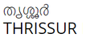

The District can claim to have played a significant part in fostering the trade relations between Kerala and the outside world in the ancient and medieval period. It can also claim to have played an important part in fostering cultural relations and in laying the foundation of a cosmopolitan and compose culture in this part of the country. Kodungalloor which had the unique distinction of being the “Primum Emporium India”, also belongs to the signal honour of having first given shelter to all the three communities which have contributed to the prosperity of Malabar’. These three communities are the Christians, the Jews and the Muslims.In 1947, India gained independence from the British colonial rule. Cochin was the first princely state to join the Indian Union willingly. Post independence, E. Ikkanda Warrier became the first Prime Minister of Cochin. K.P.Madhavan Nair, P.T Jacob, C. Achutha Menon, Panampilly Govinda Menon were few of the other stalwarts who were in the forefront of the democratic movements. Then in 1949, Travancore-Cochin state came into being by the merger of Cochin and Travancore, with Parur T. K. Narayana Pillai as the first chief minister. Travancore-Cochin, was in turn merged with the Malabar district of the Madras State. Finally, the Government of India’s 1 November 1956 States Reorganisation Act inaugurated a new state — Kerala — incorporating Travancore-Cochin, Malabar District, and the taluk of Kasargod, South Kanara.